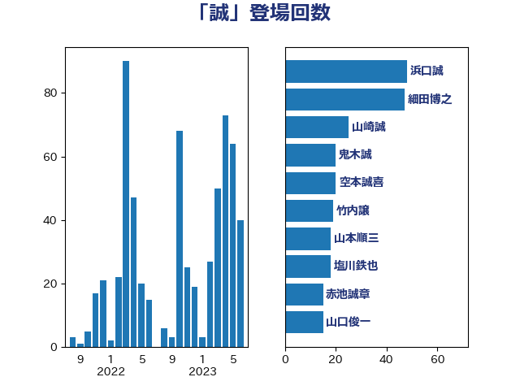

単語「誠」

| 浜口誠 | 国民民主党 | 51 回 |
| 山東昭子 | 自由民主党 | 29 回 |
| 山本順三 | 自由民主党 | 28 回 |
| 山崎誠 | 立憲民主党 | 27 回 |
| 細田博之 | 自由民主党 | 20 回 |
| 赤池誠章 | 自由民主党 | 15 回 |
| 古屋範子 | 公明党 | 10 回 |
| 空本誠喜 | 日本維新の会 | 10 回 |
| 平口洋 | 自由民主党 | 8 回 |
| 鬼木誠 | 立憲民主党 | 8 回 |
| 山口俊一 | 自由民主党 | 7 回 |
| 小泉進次郎 | 自由民主党 | 6 回 |
| 藤岡隆雄 | 立憲民主党 | 6 回 |
| 野村哲郎 | 自由民主党 | 6 回 |
| 長峯誠 | 自由民主党 | 6 回 |
| 高木毅 | 自由民主党 | 6 回 |
| 小里泰弘 | 自由民主党 | 5 回 |
| 根本匠 | 自由民主党 | 5 回 |
| 古川禎久 | 自由民主党 | 4 回 |
| 吉田忠智 | 立憲民主党 | 4 回 |
| 山谷えり子 | 自由民主党 | 4 回 |
| 杉久武 | 公明党 | 4 回 |
| 齋藤健 | 自由民主党 | 4 回 |
| 伊藤俊輔 | 立憲民主党 | 3 回 |
| 小沢雅仁 | 立憲民主党 | 3 回 |
| 岸田文雄 | 自由民主党 | 3 回 |
| 市村浩一郎 | 日本維新の会 | 3 回 |
| 平木大作 | 公明党 | 3 回 |
| 海江田万里 | 立憲民主党 | 3 回 |
| 神津たけし | 立憲民主党 | 3 回 |
| 義家弘介 | 自由民主党 | 3 回 |
| 自見はなこ | 自由民主党 | 3 回 |
| 菅義偉 | 自由民主党 | 3 回 |
| 金田勝年 | 自由民主党 | 3 回 |
| 長島昭久 | 自由民主党 | 3 回 |
| 馬場成志 | 自由民主党 | 3 回 |
| こやり隆史 | 自由民主党 | 2 回 |
| 一谷勇一郎 | 日本維新の会 | 2 回 |
| 伊藤忠彦 | 自由民主党 | 2 回 |
| 原口一博 | 立憲民主党 | 2 回 |
| 宮本周司 | 自由民主党 | 2 回 |
| 斎藤嘉隆 | 立憲民主党 | 2 回 |
| 新谷正義 | 自由民主党 | 2 回 |
| 浅野哲 | 国民民主党 | 2 回 |
| 渡辺博道 | 自由民主党 | 2 回 |
| 熊田裕通 | 自由民主党 | 2 回 |
| 石井浩郎 | 自由民主党 | 2 回 |
| 神谷裕 | 立憲民主党 | 2 回 |
| 福岡資麿 | 自由民主党 | 2 回 |
| 稲津久 | 公明党 | 2 回 |
| 篠原豪 | 立憲民主党 | 2 回 |
| 茂木敏充 | 自由民主党 | 2 回 |
| 西村康稔 | 自由民主党 | 2 回 |
| 鈴木俊一 | 自由民主党 | 2 回 |
| 鈴木馨祐 | 自由民主党 | 2 回 |
| あかま二郎 | 自由民主党 | 1 回 |
| 上野通子 | 自由民主党 | 1 回 |
| 中川宏昌 | 公明党 | 1 回 |
| 中川郁子 | 自由民主党 | 1 回 |
| 中根一幸 | 自由民主党 | 1 回 |
| 中西祐介 | 自由民主党 | 1 回 |
| 二階俊博 | 自由民主党 | 1 回 |
| 伊藤信太郎 | 自由民主党 | 1 回 |
| 伊藤孝恵 | 国民民主党 | 1 回 |
| 勝目康 | 自由民主党 | 1 回 |
| 古賀之士 | 立憲民主党 | 1 回 |
| 和田政宗 | 自由民主党 | 1 回 |
| 大西健介 | 立憲民主党 | 1 回 |
| 太栄志 | 立憲民主党 | 1 回 |
| 宮口治子 | 立憲民主党 | 1 回 |
| 宮本岳志 | 日本共産党 | 1 回 |
| 宮沢洋一 | 自由民主党 | 1 回 |
| 小熊慎司 | 立憲民主党 | 1 回 |
| 尾辻秀久 | 無所属 | 1 回 |
| 山口壯 | 自由民主党 | 1 回 |
| 山本左近 | 自由民主党 | 1 回 |
| 山田宏 | 自由民主党 | 1 回 |
| 岡本あき子 | 立憲民主党 | 1 回 |
| 岩渕友 | 日本共産党 | 1 回 |
| 岩谷良平 | 日本維新の会 | 1 回 |
| 工藤彰三 | 自由民主党 | 1 回 |
| 徳永エリ | 立憲民主党 | 1 回 |
| 斉藤鉄夫 | 公明党 | 1 回 |
| 木原誠二 | 自由民主党 | 1 回 |
| 杉本和巳 | 日本維新の会 | 1 回 |
| 松島みどり | 自由民主党 | 1 回 |
| 松村祥史 | 自由民主党 | 1 回 |
| 松野博一 | 自由民主党 | 1 回 |
| 林芳正 | 自由民主党 | 1 回 |
| 橋本岳 | 自由民主党 | 1 回 |
| 櫻井充 | 自由民主党 | 1 回 |
| 櫻田義孝 | 自由民主党 | 1 回 |
| 泉健太 | 立憲民主党 | 1 回 |
| 渡辺猛之 | 自由民主党 | 1 回 |
| 熊谷裕人 | 立憲民主党 | 1 回 |
| 田名部匡代 | 立憲民主党 | 1 回 |
| 田所嘉徳 | 自由民主党 | 1 回 |
| 石原宏高 | 自由民主党 | 1 回 |
| 石田真敏 | 自由民主党 | 1 回 |
| 礒崎哲史 | 国民民主党 | 1 回 |
| 福山哲郎 | 立憲民主党 | 1 回 |
| 秋野公造 | 公明党 | 1 回 |
| 芳賀道也 | 国民民主党 | 1 回 |
| 菅家一郎 | 自由民主党 | 1 回 |
| 藤川政人 | 自由民主党 | 1 回 |
| 西銘恒三郎 | 自由民主党 | 1 回 |
| 谷川とむ | 自由民主党 | 1 回 |
| 赤羽一嘉 | 公明党 | 1 回 |
| 金子恭之 | 自由民主党 | 1 回 |
| 金子恵美 | 立憲民主党 | 1 回 |
| 阿達雅志 | 自由民主党 | 1 回 |
| 阿部弘樹 | 日本維新の会 | 1 回 |
| 高市早苗 | 自由民主党 | 1 回 |
| 高木宏壽 | 自由民主党 | 1 回 |
| 高階恵美子 | 自由民主党 | 1 回 |
| 鶴保庸介 | 自由民主党 | 1 回 |